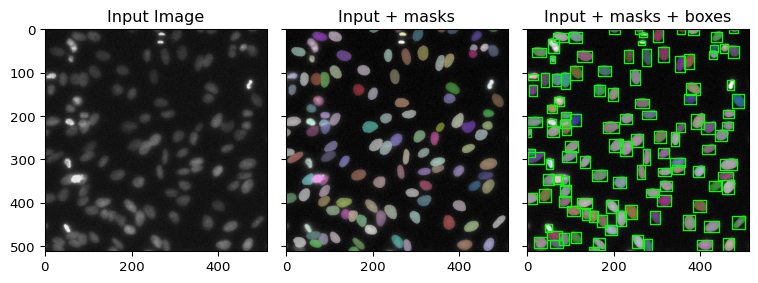
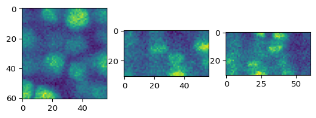
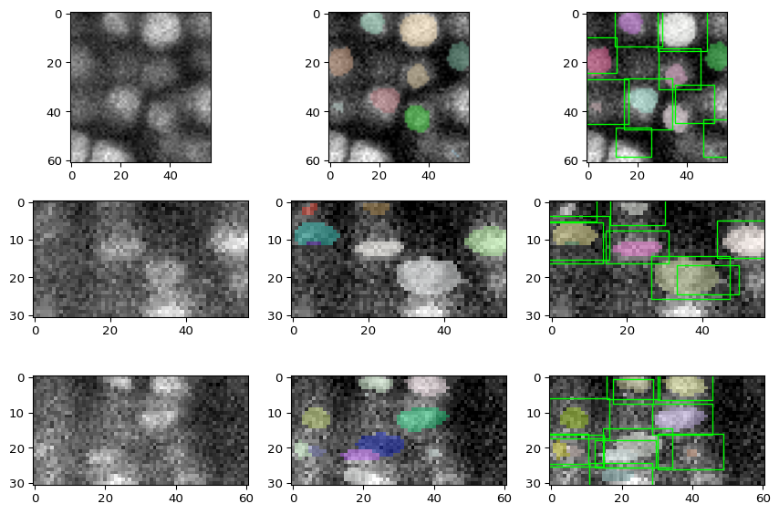

[1]:
import os
import sys
import numpy as np
import torch
from matplotlib.collections import PolyCollection
sys.path.append('/ifshome/abenneck/docs_public/yolo_model/docs/scripts')
import yolo_post_help
from yolo_post_help import remove_low_conf_bboxes, postprocess, bb_to_rec
2D Example¶
[2]:
def stardist_to_bbox(raw_output, mode='2D'):
"""
Converts a standard output from the 2D StarDist model to a set of bounding boxes
"""
bb_out = []
if mode == '2D':
for i in range(len(raw_output['coord'])):
coords = raw_output['coord'][i]
center = raw_output['points'][i]
prob = float(raw_output['prob'][i])
xmin = float(min(coords[1]))
xmax = float(max(coords[1]))
ymin = float(min(coords[0]))
ymax = float(max(coords[0]))
bb_out.append([xmin, xmax, ymin, ymax, prob])
elif mode == '3D':
n_ray = raw_outputs['dist'].shape[1]
n_cells = raw_outputs['dist'].shape[0]
n_dim = raw_outputs['points'].shape[1]
for i in range(n_cells):
prob = raw_outputs['prob'][i]
center = raw_outputs['points'][i]
n_vectors = [raw_outputs['rays_vertices'][j]*raw_outputs['dist'][i][j] for j in range(n_ray)]
n_vectors = np.asarray(n_vectors) + center
xmin, ymin, zmin = np.min(n_vectors, axis=0)
xmax, ymax, zmax = np.max(n_vectors, axis=0)
bb_out.append([xmin, xmax, ymin, ymax, zmin, zmax, prob])
else:
print(f'Invalid mode - {mode}; Expected 2D or 3D')
return np.asarray(bb_out)
def bb_list_to_bb_plot(bb_in, pos = [0,1,2,3], **kwargs):
left = torch.Tensor(bb_in[:,pos[0]].ravel())
top = torch.Tensor(bb_in[:,pos[1]].ravel())
right = torch.Tensor(bb_in[:,pos[2]].ravel())
bottom = torch.Tensor(bb_in[:,pos[3]].ravel())
p0 = torch.stack( (left, top), dim=1)
p1 = torch.stack( (right, top), dim=1)
p2 = torch.stack( (right, bottom), dim=1)
p3 = torch.stack( (left, bottom), dim=1)
p = torch.stack( (p0,p1,p2,p3),dim=-2)
return PolyCollection(p, **kwargs)
Load a pretrained 2D model¶
[3]:
from stardist.models import StarDist2D
# prints a list of available models
# StarDist2D.from_pretrained()
# creates a pretrained model
model = StarDist2D.from_pretrained('2D_versatile_fluo')
2026-08-18 11:41:23.570814: I tensorflow/core/platform/cpu_feature_guard.cc:210] This TensorFlow binary is optimized to use available CPU instructions in performance-critical operations.
To enable the following instructions: AVX2 AVX512F FMA, in other operations, rebuild TensorFlow with the appropriate compiler flags.
Found model '2D_versatile_fluo' for 'StarDist2D'.
Loading network weights from 'weights_best.h5'.
Loading thresholds from 'thresholds.json'.
Using default values: prob_thresh=0.479071, nms_thresh=0.3.
2026-08-18 11:41:27.673626: E external/local_xla/xla/stream_executor/cuda/cuda_platform.cc:51] failed call to cuInit: INTERNAL: CUDA error: Failed call to cuInit: UNKNOWN ERROR (303)
Visualize a test image, the model outputs, and bboxes (which will be used for downstream comparison)¶
[8]:
img = test_image_nuclei_2d()
img_up = normalize(img)
[8]:
array([-0.05102041, -0.04591837, -0.04081633, -0.03571429, -0.03061225,
-0.0255102 , -0.02040816, -0.01530612, -0.01020408, -0.00510204,
0. , 0.00510204, 0.01020408, 0.01530612, 0.02040816,
0.0255102 , 0.03061225, 0.03571429, 0.04081633, 0.04591837,
0.05102041, 0.05612245, 0.06122449, 0.06632653, 0.07142857,
0.07653061, 0.08163265, 0.0867347 , 0.09183674, 0.09693877,
0.10204082, 0.10714286, 0.1122449 , 0.11734694, 0.12244898,
0.12755102, 0.13265306, 0.1377551 , 0.14285715, 0.14795919,
0.15306123, 0.15816326, 0.1632653 , 0.16836734, 0.1734694 ,
0.17857143, 0.18367347, 0.18877551, 0.19387755, 0.19897959,
0.20408164, 0.20918368, 0.21428572, 0.21938775, 0.2244898 ,
0.22959183, 0.23469388, 0.23979592, 0.24489796, 0.25 ,
0.25510204, 0.26020408, 0.26530612, 0.27040815, 0.2755102 ,
0.28061223, 0.2857143 , 0.29081634, 0.29591838, 0.3010204 ,
0.30612245, 0.3112245 , 0.31632653, 0.32142857, 0.3265306 ,
0.33163264, 0.33673468, 0.34183672, 0.3469388 , 0.35204083,
0.35714287, 0.3622449 , 0.36734694, 0.37244898, 0.37755102,
0.38265306, 0.3877551 , 0.39285713, 0.39795917, 0.4030612 ,
0.40816328, 0.41326532, 0.41836736, 0.4234694 , 0.42857143,
0.43367347, 0.4387755 , 0.44387755, 0.4489796 , 0.45408162,
0.45918366, 0.4642857 , 0.46938777, 0.4744898 , 0.47959185,
0.48469388, 0.48979592, 0.49489796, 0.5 , 0.50510204,
0.5102041 , 0.5153061 , 0.52040815, 0.5255102 , 0.53061223,
0.53571427, 0.5408163 , 0.54591835, 0.5510204 , 0.5561224 ,
0.56122446, 0.56632656, 0.5714286 , 0.57653064, 0.5816327 ,
0.5867347 , 0.59183675, 0.5969388 , 0.6020408 , 0.60714287,
0.6122449 , 0.61734694, 0.622449 , 0.627551 , 0.63265306,
0.6377551 , 0.64285713, 0.6479592 , 0.6530612 , 0.65816325,
0.6632653 , 0.6683673 , 0.67346936, 0.6785714 , 0.68367344,
0.68877554, 0.6938776 , 0.6989796 , 0.70408165, 0.7091837 ,
0.71428573, 0.71938777, 0.7244898 , 0.72959185, 0.7346939 ,
0.7397959 , 0.74489796, 0.75 , 0.75510204, 0.7602041 ,
0.7653061 , 0.77040815, 0.7755102 , 0.78061223, 0.78571427,
0.7908163 , 0.79591835, 0.8010204 , 0.8061224 , 0.81122446,
0.81632656, 0.8214286 , 0.82653064, 0.8316327 , 0.8367347 ,
0.84183675, 0.8469388 , 0.8520408 , 0.85714287, 0.8622449 ,
0.86734694, 0.872449 , 0.877551 , 0.88265306, 0.8877551 ,
0.89285713, 0.8979592 , 0.9030612 , 0.90816325, 0.9132653 ,
0.9183673 , 0.92346936, 0.9285714 , 0.93367344, 0.93877554,
0.9438776 , 0.9489796 , 0.95408165, 0.9591837 , 0.96428573,
0.96938777, 0.9744898 , 0.97959185, 0.9846939 , 0.9897959 ,
0.99489796, 1. , 1.005102 , 1.0102041 , 1.0153061 ,
1.0204082 , 1.0255102 , 1.0306122 , 1.0357143 , 1.0408163 ,
1.0459183 , 1.0510204 , 1.0561224 , 1.0612245 , 1.0663265 ,
1.0714285 , 1.0765306 , 1.0816326 , 1.0867347 , 1.0918367 ,
1.0969387 , 1.1020408 , 1.1071428 , 1.1122448 , 1.1173469 ,
1.1224489 , 1.1275511 , 1.1326531 , 1.1479592 ], dtype=float32)
[4]:
from stardist.data import test_image_nuclei_2d
from stardist.plot import render_label
from csbdeep.utils import normalize
import matplotlib.pyplot as plt
img = test_image_nuclei_2d()
# Labels: integer-valued array of same shape as 'img'. Each pixel is either 0 (bg) or >0 (unique object)
# raw_outputs: dict['coord', 'points', 'prob']. Each elem in the dict is the same length + correponds to a single unique object
# - dict['coord']: The endpoints for each of the 32 radial vectors encompassing a single object
# - dict['points']: The center point for a single object
# - dict['prob']: The probability that an object exists at this location
labels, raw_outputs = model.predict_instances(normalize(img))
bb = stardist_to_bbox(raw_outputs)
bb_plot = bb_list_to_bb_plot(bb, pos=[0,2,1,3], fc='none', ec='lime')
fig, ax = plt.subplots(1,3, sharey=True, layout='tight')
ax[0].imshow(img, cmap = 'gray')
ax[0].set_title('Input Image')
ax[1].imshow(render_label(labels, img=img))
ax[1].set_title("Input + masks")
ax[2].imshow(render_label(labels, img=img))
ax[2].add_collection(bb_plot)
ax[2].set_title("Input + masks + boxes")
fig.set_size_inches(8,3)

3D Example¶
[99]:
from stardist.models import StarDist3D
model = StarDist3D.from_pretrained('3D_demo')
Found model '3D_demo' for 'StarDist3D'.
Loading network weights from 'weights_best.h5'.
Loading thresholds from 'thresholds.json'.
Using default values: prob_thresh=0.707933, nms_thresh=0.3.
[126]:
def bb_filter(bb_in, ax, val):
"""
bb :
list of bboxes output from stardist_to_bbox()
ax :
The dimension being used for downstream visuzlization
val :
The slice index being visualized
"""
bb_out = []
for bb in bb_in:
if ax == 0:
if bb[0] <= val and bb[1] >= val:
bb_out.append(bb)
elif ax == 1:
if bb[2] <= val and bb[3] >= val:
bb_out.append(bb)
elif ax == 2:
if bb[4] <= val and bb[5] >= val:
bb_out.append(bb)
else:
print('Invalid dimension idx supplied, expected {0,1,2}')
return np.asarray(bb_out)
Visualize middle slice of 3D test image¶
[105]:
from stardist.data import test_image_nuclei_3d
img = test_image_nuclei_3d()
print(img.shape)
fig, ax = plt.subplots(1,3)
ax[0].imshow(img[img.shape[0]//2,:,:])
ax[1].imshow(img[:,img.shape[1]//2,:])
ax[2].imshow(img[:,:,img.shape[2]//2])
(31, 61, 57)
[105]:
<matplotlib.image.AxesImage at 0x7f05a03e6790>

Apply the pretrained 3D StarDist model + plot the results¶
[127]:
# raw_outputs[dist]: Nx96 array - dist[n] contains the lengths of the 96 radial vectors which define cell n
# raw_outputs[points]: Nx3 array - points[n] contains the xyz center voxel for cell n
# raw_outputs[prob]: N array - Contains the probability for each of the n cells
# raw_outputs[rays]: Custom object
# raw_outputs[rays_vertices] 96x3 array - rays_vertices[n] contains the endpoint for the nth radial vector, relative to the origin
# raw_outputs[rays_faces] 188x3 array - rays_faces[m] contains the indeces of 3 adjacent radial vectors. If a face were to be made between the 3 vectors in each elem, there would likely be a complete, closed surface
labels, raw_outputs = model.predict_instances(normalize(img))
bb = stardist_to_bbox(raw_outputs, mode='3D')
idx_ax0 = img.shape[0]//2
idx_ax1 = img.shape[1]//2
idx_ax2 = img.shape[2]//2
bb_plot0 = bb_list_to_bb_plot(bb_filter(bb, ax = 0, val = idx_ax0), pos=[2,4,3,5], fc='none', ec='lime')
bb_plot1 = bb_list_to_bb_plot(bb_filter(bb, ax = 1, val = idx_ax1), pos=[4,0,5,1], fc='none', ec='lime')
bb_plot2 = bb_list_to_bb_plot(bb_filter(bb, ax = 2, val = idx_ax2), pos=[2,0,3,1], fc='none', ec='lime')
fig, axs = plt.subplots(3,3,layout='tight')
sub_img = img[idx_ax0,:,:]
axs[0,0].imshow(sub_img, cmap='gray')
axs[0,1].imshow(render_label(labels[idx_ax0,:,:], img=sub_img))
axs[0,2].imshow(render_label(labels[idx_ax0,:,:], img=sub_img))
axs[0,2].add_collection(bb_plot0)
sub_img = img[:,idx_ax1,:]
axs[1,0].imshow(sub_img, cmap='gray')
axs[1,1].imshow(render_label(labels[:,idx_ax1,:], img=sub_img))
axs[1,2].imshow(render_label(labels[:,idx_ax1,:], img=sub_img))
axs[1,2].add_collection(bb_plot1)
sub_img = img[:,:,idx_ax2]
axs[2,0].imshow(sub_img, cmap='gray')
axs[2,1].imshow(render_label(labels[:,:,idx_ax2], img=sub_img))
axs[2,2].imshow(render_label(labels[:,:,idx_ax2], img=sub_img))
axs[2,2].add_collection(bb_plot2)
fig.set_size_inches(9,6)
